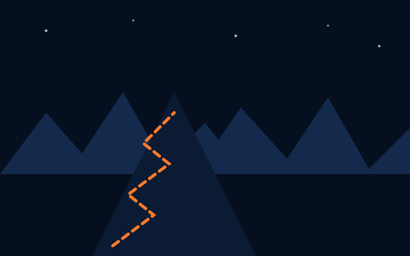

The Story
Every compass in this world points home. That's the problem.
Legend says the old compasses in this valley only know one trick: the shortest path back to your front door. Boring, right? So the wanderers of this world stopped using them for directions - and started using them as a challenge.
Your goal isn't to get home fast. It's to see everything worth seeing on the way: the whispering forests, the sky bridges, the desert detours, and every secret trail in between. The longer and stranger your route, the higher your score.
You won't wander alone. Pip, a small AI companion built by Echo the Tinker, tags along to suggest routes even you wouldn't have thought to try.